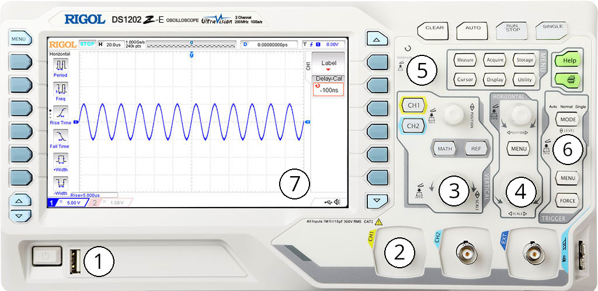

Lab B2 - RC Circuit
Table of Contents
In this Resistor+Capacitor Circuit lab, we will be messing around with capacitors and using new device called an oscilloscope.
1. Create your own capacitor (30 mins)
Woo finally some art! Lets make a capacitor. First gather some supplies:
- a large smooth piece of Aluminum foil (a foot-ish long)
- an equally large piece of plastic film
- a scissors
- a few 1" sections of tape
- Lay out the plastic sheet and cut in half, forming two rectangles.
- Tear/cut the alumium foil into a rectangle slightly smaller area than the plastic sheet, but leave a little tail of foil hanging out past the edge of the plastic. Repeat this for the second sheet of plastic, but leave the tail of Aluminum hanging out a different side. Tape the aluminum foil in a couple places to hold it securely.
- Place the sheets on top of each other, making sure that the aluminum sheets will not touch each other.
- Roll the capacitor up into a tube to conserve space and help stabilize the sheets.
Checkpoint:
- You made a capacitor! You can try to charge it up with the VanDeGraff generator (or PVC with fur) and see a tiny spark when you short the ends.
- Save this capacitor for part 4 of this lab. You can try to measure its capacitance with an oscilloscope.
2. RC-Circuit with large time constant (30 mins)
2.1. Charging a capacitor
Capacitors are storage tanks for charge. If you place a resistor and a capacitor in series with one another, the charge separated by the capacitor will try to flow, but the resistor impedes the flow which slows it down. The differential equation for charging is found using Kirchoff’s loop law on the series RC-Circuit:
\[ \mathcal{E} - \frac{dQ}{dt}R - \frac{Q}{C} = 0\]
where the voltage gain from the battery is \(\mathcal{E}\), the current through the resistor is \(R\) multiplied by the time dependent current \(I=\frac{dQ}{dt}\), and the voltage drop across a capacitor is simply \(\frac{Q}{C}\). While this looks hard, it is a seperable differential equation and can be solved with standard integration. The charging of a capacitor
\[\Delta Q_{+}(t) = \Delta Q_{0} \left( 1 - \exp \left( \frac{-t}{RC}\right) \right)\]
where \(Q_{0}\) is the maximum charge of the capacitor at the given supply voltage (\(Q=C\Delta V\)) and \(\tau = RC\) is the “time constant” of the circuit.
2.2. Discharging a capacitor
Discharging is exactly the same procedure, except you dont need to worry about the battery EMF \(\mathcal{E}\). The Kirchoff’s loop law in differential equation becomes
\[-IR - \frac{Q}{C} = 0 \qquad \Rightarrow \qquad \frac{dQ}{dt} = \left(\frac{1}{RC} \right)Q\]
This is more clearly seperable (all the Q and dQ goes to one side all the t and dt goes to the other). Integration yields a modified equation for discharge of a capacitor
\[\Delta Q_{-}(t) = \Delta Q_{0} \exp \left( \frac{-t}{RC} \right)\]
2.3. Design the circuit
Choose circuit elements which allows the discharge to happen slowly. Pick a large capacitor (holds lots of charge) and pick a large resistor (hard to push the charge thru), then watch the discharge happen slowly on a multimeter.
Start by finding a medium-large electrolytic capacitor. These capacitors are polarized (+ and -) so be mindful of the positive side. Measure the actual capacitance with a multimeter and record below: \[C=\]
Checkpoint:
- Design the circuit such that the voltage is 1/10th it’s original value after one minute of discharge (12V becomes 1.2V after 60 sec). You will need to manipulate the \(\Delta V(t)\) equation to solve for R.
- Create a resistor circuit network to attach (in series) to your capacitor. Try to get as close as you can by using combinations of resistors if necessary.
- Connect circuit to a power supply. Set up the circuit and let the capacitor charge to full. You can short over your network of resistors with a lower value resistor to charge more quickly (something like \(1k-\Omega\))
- Connect the multimeter to measure the voltage of the capacitor and then disconnect the circuit from the power supply. This will leave the capacitor charged. Then start the timer when you connect the resistor+capacitor loop back together (without power supply). Notice the slow rampdown of charge across the capacitor (charge is proportional to voltage \(Q=C\Delta V\))
- Measure the time it takes to discharge the circuit to 1/10th is original charge \[t= \qquad \qquad \qquad \qquad \text{percent error} = \frac{60-t}{60} =\]
3. Part 3: Oscilloscope (30 mins)
There are SOO many different oscilloscopes. Useful oscilloscopes cost ~$300 currently (like we are using today), but professionals will normally use multiple thousand dollar scopes on an electronics bench. The difference normally being higher bandwidth (to look at faster signals) and a larger display. The branding on the top almost always lists the fastest frequency the scope can resolve (100MHz+ is standard currently)

- Power - self explanatory
- Input - This is where the BNC probe plugs in (note multiple “channels”)
- Vertical Scale (Volts/div) - Voltage axis
- Horizontal Scale (seconds/div) - Time axis
- Measurement Menu - Displays a movable cursor on the screen
- Trigger - tell device when to display the wave (sets “phase angle”)
- Display - buttons on each side change depending on mode
These devices are similar to a TI calculator in that you will learn the interface of your preferred brand of oscope and then know the menu inside and out. This takes time to learn, but getting a basic signal to display is easy enough on any scope.
Lets dive in and mess about. The lab instructor will have a few signal generators set up to measure. Materials to gather:
- Grab an oscope. You might have to share :/
- Probe with BNC connector on one side and a probe clip on the other
- Power cable
Now clip the probe on channel 1 to the signal generator and measure the signal:
- adjust the voltage (vertical) scale to show an appropriate amplitude
- adjust the time (horizontal) scale to show a couple wavelengths
- adjust the trigger to see how the device knows when to display the wave
- Use the measurement menu with the cursor to measure the signal frequency and amplitude
Checkpoint:
- Connect the oscilloscope to the signal generator and “zoom in” on the signal
- Measure the frequency and amplitude of the signal. Check with the instructor to verify.
4. Part 4: Measuring capacitance (30 mins)
Now lets put this all together and make a measurement of capacitance. As you saw above, a charged capacitor will discharge through the resistor with an exponential curve in time. For smaller caps, these charge and discharge cycles do not take a full minute to complete. Often the caps will charge in a microsecond (10-6 s). This is too fast for a multimeter to ever see, but the oscilloscope can easily resolve this signal.
The capacitor will be charged using a square wave produced using the signal generator. This wave jumps between 0 and V like a step-function, thus charging and then discharging the cap repeatedly (Dont do this with a polarized electrolytic cap).
- Grab a capacitor ceramic cap (unpolarized) and a resistor to make an RC circuit. Find a combination which to make \(\tau\) of around 10 to 100 microseconds. Make an accurate measurement of the resistance using the multimeter: \[R=\]
- Connect CH1 of the oscope to the signal generator (set to approx f=100kHz) and zoom in on the square waveform (try something like: vertical 1-2 Volt/div, horizontal 5–10 µs/div). If you see nothing try adjusting the trigger level and/or ask for help.
- connect the RC series circuit to the signal generator. For measurement simplicity, please place the resistor on the red aligator clip and the capacitor on the black (as to have the signal generator and oscope share the common ground leg).
- connect CH2 of the oscope over the capacitor (ensure both probes share the same ground). Adjust the vertical and horizontal scales until you find the exponential growth/decay of the capacitor
- Use the measure button to show a cursor on the oscope and measure \(\tau\). Use this time to calculate the capacitance \(C\). (Line up cursors to measure the time from the start of charging to about 63% of the final voltage)
Checkpoint:
- Why choose 63%? What percentage of charge is transferred after \(2\tau\) seconds?
- Measure the value of C on the capacitor in Farads.
If you have time/desire, please use the same procedure to find the capacitance of your homemade cap from the beginning of lab.